Understanding Vectors
In this lesson, we will explore Vectors in mathematics in A-level
What is a vector
Vectors represent magnitude and direction which are commonly shown with arrows.

Vectors appear in many contexts like mechanics where they are used to model forces.
One of the ways vectors can be represented is as a column vector or as an i and j unit vector.
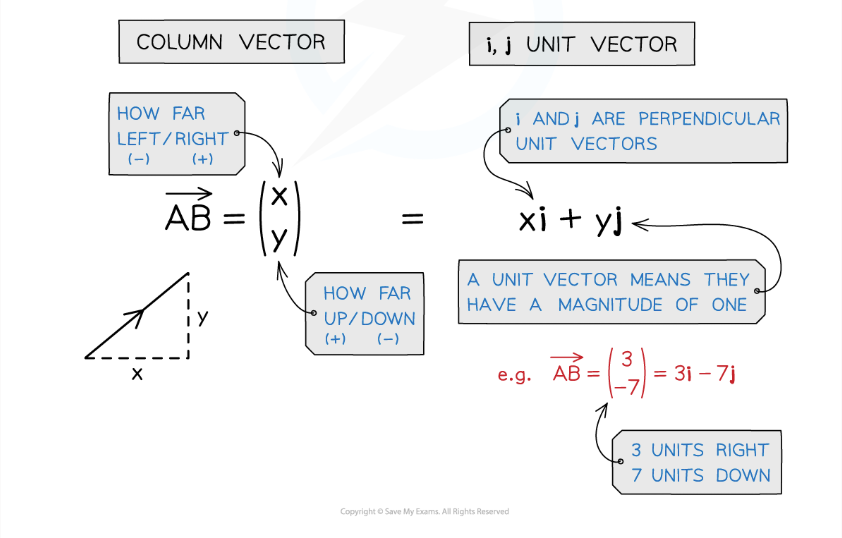
Magnitude and direction
When referring to the magnitude of a vector it is simply its size.
It also shows what the distance between two points is.
By using pythagoras' theorem you can find the magnitude of a vector.
The magnitude of a vector a is written |a| when typed.
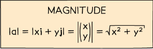
The same vector can be represented differently
The vectors magnitude (|XY|) is sometimes referred to as the modulus of the vector.
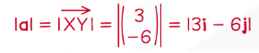
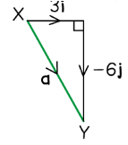
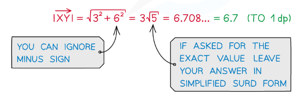
When working out the unit vector in the direction of a given vector, you divide the vector by its magnitude.
because a unit vector has a magnitude of 1.
What is the direction of a vector?
Vectors have a direction, which is indicated by the arrowhead.
Vectors have opposite direction if they are the same size but opposite signs.
The direction of a vector differentiates it from scalars.
Two vectors will be parallel if one is a scalar multiple of the other.
How do i write a vector in component form?
Writing vectors in component form involves i and j components.
Given the magnitude and direction of a vector, you can work out its i and j components.
Vector addition
What adding vectors together does is let us describe the movement between two points.
This creates a single vector that is called the resultant vector.
Subtracting a vector is the same as adding its negative.
Adding vectors PQ and QP gives the zero vector. This is denoted with a bold zero.
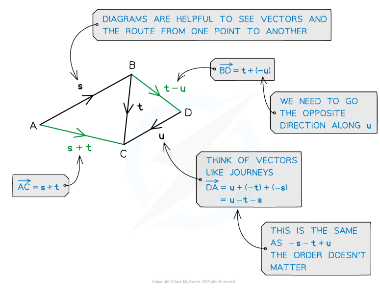
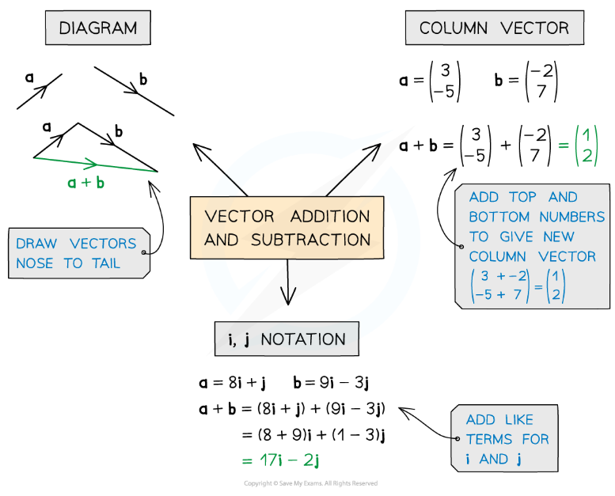
Scalars and parallel vectors
Multiplying a vector by a scalar changes its magnitude but not its direction.
Two vectors are parallel if one is a scalar multiple of the other.
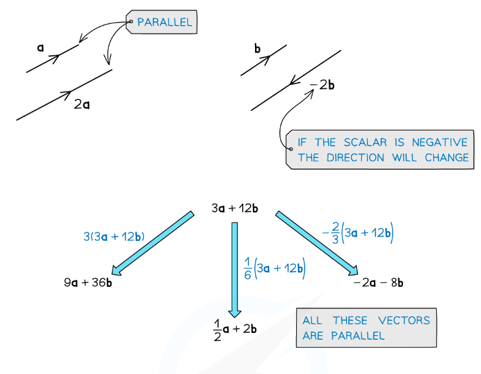
Position vectors
A position vector is a vector that represents the position of a point in space relative to an origin.
Position vectors are often denoted with a lowercase letter with an arrow above it, such as r.
They are different to displacement vectors, which represent the change in position between two points.
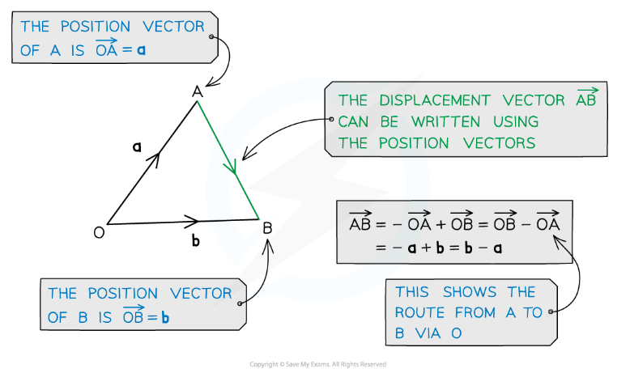
Distance between two points
The distance between two points can be found using the magnitude of the displacement vector between them.
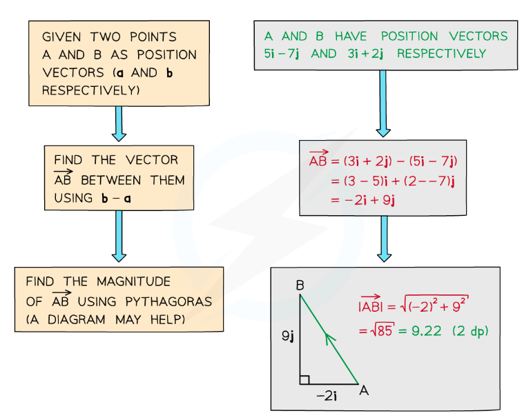
Problem solving using vectors
You can use vectors to prove two lines are parallel(look to vector addition) and to show that points are collinear.
You can also find missing vertices of a given shape using vectors.
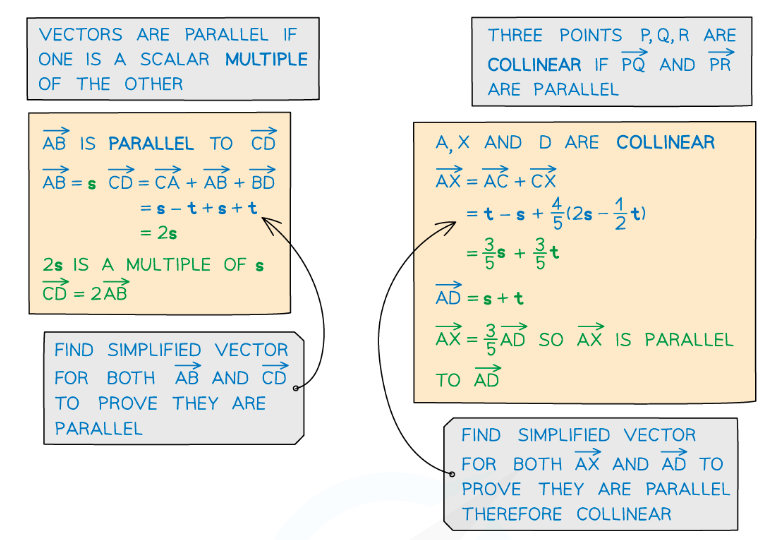
When do i use trigonometry in vector problems?
trigonometry is used when you need to find the components of a vector given its magnitude and direction, or when you need to find the direction of a vector given its components.
Trigonometry is also used when you need to find the angle between two vectors or when you need to find the area of a triangle formed by two vectors.
It is also used to find the area of a triangle using a varitation of area formula.
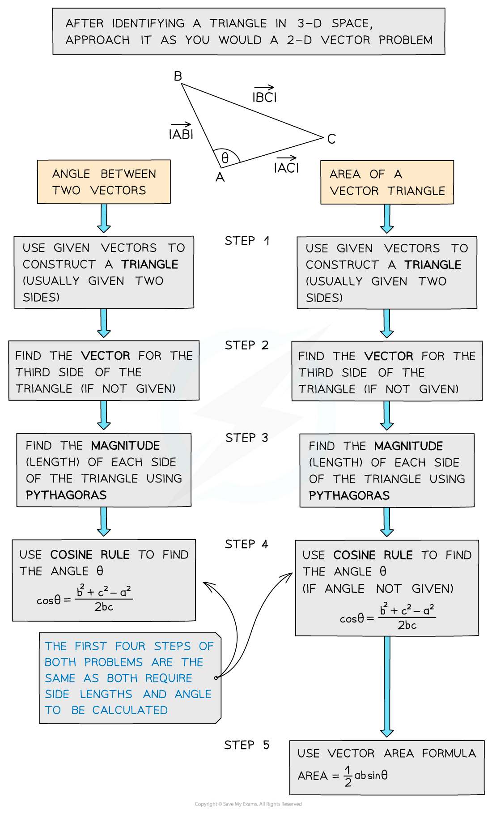
Please consider completing the Wordsearch and Lesson quiz below